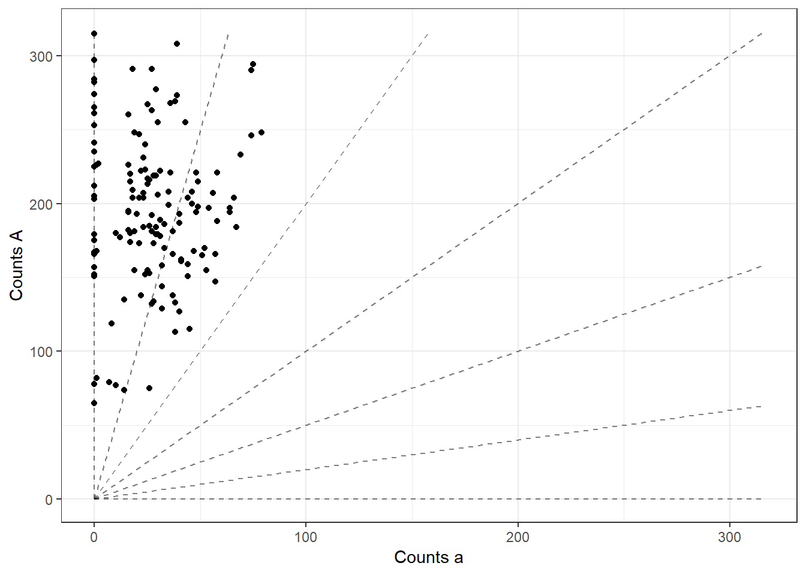
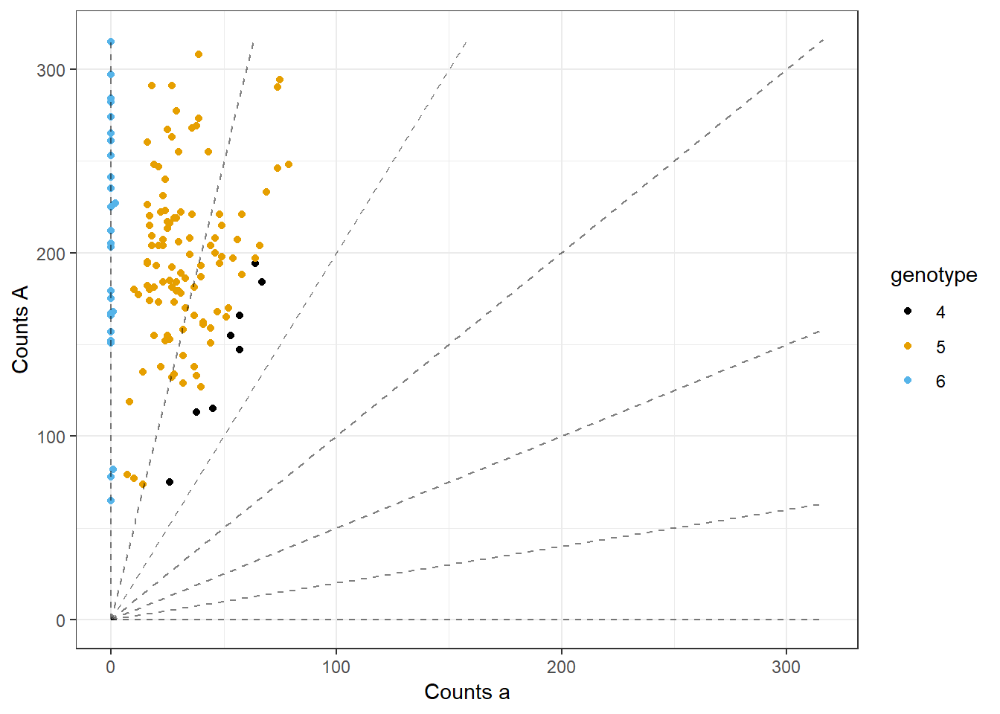
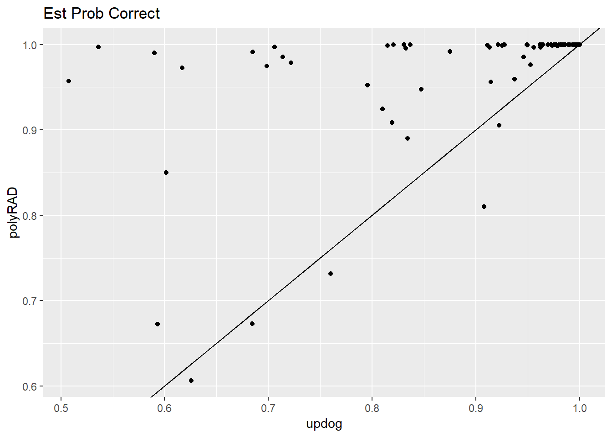
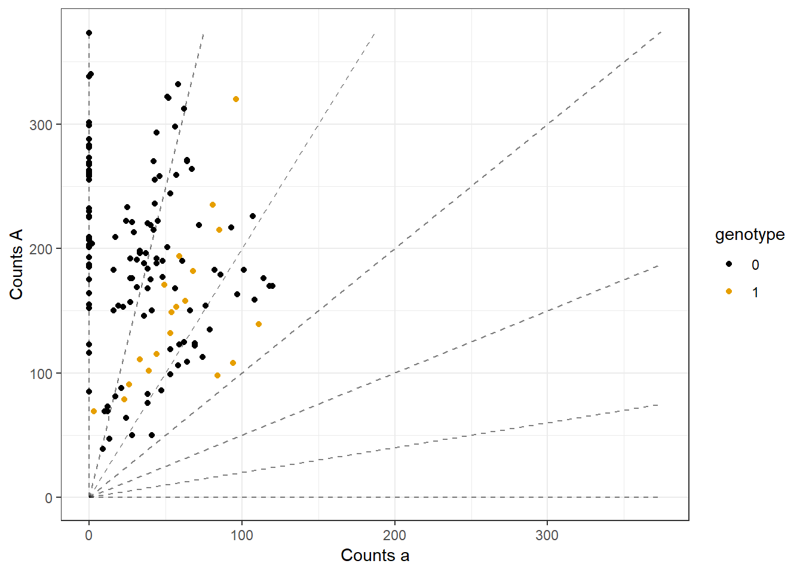
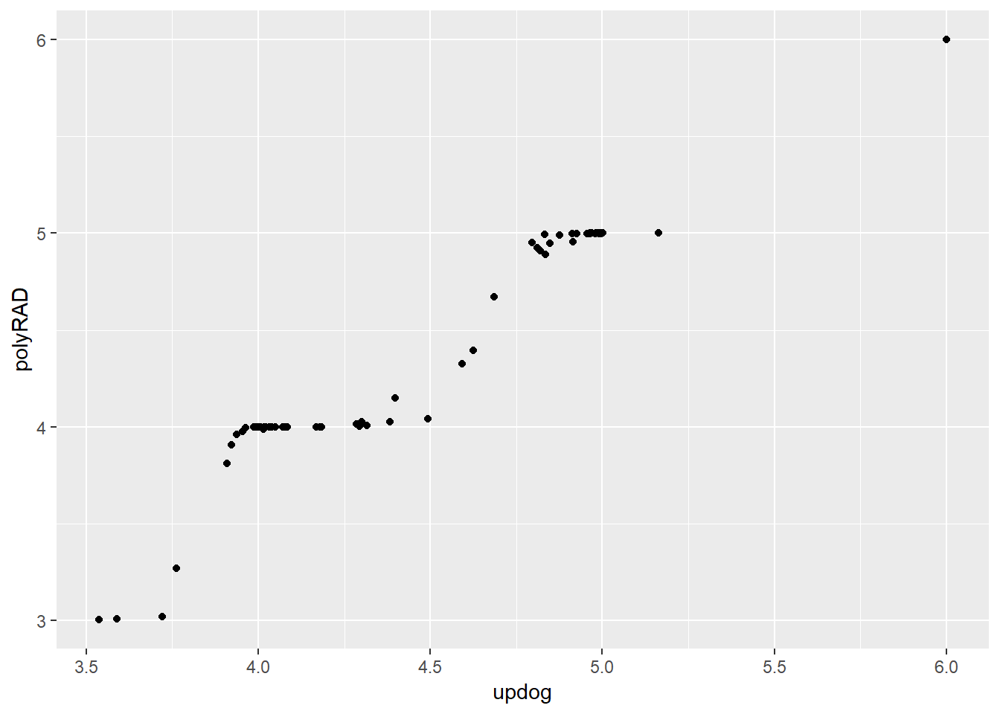

Try polyRAD on Shir Data
David Gerard
July 31, 2018
Abstract
Look at a few SNPs and see how well polyRAD does on them.
Analysis
library(updog)##
## Attaching package: 'updog'## The following object is masked from 'package:stats':
##
## convolvelibrary(polyRAD)
library(tidyverse)## -- Attaching packages ------------ tidyverse 1.2.1 --## v ggplot2 3.0.0 v purrr 0.2.5
## v tibble 1.4.2 v dplyr 0.7.6
## v tidyr 0.8.1 v stringr 1.3.1
## v readr 1.1.1 v forcats 0.3.0## -- Conflicts --------------- tidyverse_conflicts() --
## x dplyr::filter() masks stats::filter()
## x dplyr::lag() masks stats::lag()shirdf <- readRDS("../data/shir_features.RDS")
refmat <- read.csv("../../../reproduce_genotyping/Output/shirasawa_snps/example_refcounts.csv")
sizemat <- read.csv("../../../reproduce_genotyping/Output/shirasawa_snps/example_readcounts.csv")
ploidy <- 6Polyrad does not account for allele bias.
index <- 3
refvec <- refmat[, index]
sizevec <- sizemat[, index]
whichNA <- is.na(refvec) | is.na(sizevec)
refvec <- refvec[!whichNA]
sizevec <- sizevec[!whichNA]
plot_geno(refvec = refvec, sizevec = sizevec, ploidy = ploidy)
alleleDepth <- cbind(refvec, sizevec - refvec)
row.names(alleleDepth) <- 1:nrow(alleleDepth)
alleles2loc <- as.vector(c(1, 1), mode = "integer")
locTable <- data.frame(row.names = 1)
possiblePloidies = list(6)
alleleNucleotides <- c("A", "C")
RADdata(alleleDepth = alleleDepth,
alleles2loc = alleles2loc,
locTable = locTable,
possiblePloidies = possiblePloidies,
contamRate = 0.001,
alleleNucleotides = alleleNucleotides) ->
rad_dat
IterateHWE(object = rad_dat) ->
rad_out## Starting iteration 1## Mean difference in allele frequencies of 0.0215783683833828## Starting iteration 2## Mean difference in allele frequencies of 0.000449840540924673## Starting iteration 3## Mean difference in allele frequencies of 8.8267230094613e-06apply(rad_out$posteriorProb[[1]][, , 1], 2, which.max) - 1 ->
dosage_est
plot_geno(refvec = refvec, sizevec = sizevec, ploidy = ploidy, geno = dosage_est)
Now for an overdispersed SNP. I run updog using the norm option since I’m forced to use the HWE option in polyRAD.
index <- 2
refvec <- refmat[, index]
sizevec <- sizemat[, index]
whichNA <- is.na(refvec) | is.na(sizevec)
refvec <- refvec[!whichNA]
sizevec <- sizevec[!whichNA]
plot_geno(refvec = refvec, sizevec = sizevec, ploidy = ploidy)
alleleDepth <- cbind(refvec, sizevec - refvec)
row.names(alleleDepth) <- 1:nrow(alleleDepth)
alleles2loc <- as.vector(c(1, 1), mode = "integer")
locTable <- data.frame(row.names = 1)
possiblePloidies = list(6)
alleleNucleotides <- c("A", "C")
RADdata(alleleDepth = alleleDepth,
alleles2loc = alleles2loc,
locTable = locTable,
possiblePloidies = possiblePloidies,
contamRate = 0.001,
alleleNucleotides = alleleNucleotides) ->
rad_dat
IterateHWE(object = rad_dat) ->
rad_out## Starting iteration 1## Mean difference in allele frequencies of 0.0053859184541234## Starting iteration 2## Mean difference in allele frequencies of 8.02239825142409e-05## Starting iteration 3## Mean difference in allele frequencies of 1.1824355992951e-06apply(rad_out$posteriorProb[[1]][, , 1], 2, which.max) - 1 ->
dosage_est
plot_geno(refvec = refvec, sizevec = sizevec, ploidy = ploidy, geno = dosage_est)
rad_maxpostprob <- apply(rad_out$posteriorProb[[1]][, , 1], 2, max)
uout <- flexdog(refvec = refvec, sizevec = sizevec, ploidy = 6)## Fit: 1 of 5
## Initial Bias: 0.3679
## Log-Likelihood: -547
## Keeping new fit.
##
## Fit: 2 of 5
## Initial Bias: 0.6065
## Log-Likelihood: -547
## Keeping old fit.
##
## Fit: 3 of 5
## Initial Bias: 1
## Log-Likelihood: -547
## Keeping old fit.
##
## Fit: 4 of 5
## Initial Bias: 1.649
## Log-Likelihood: -547
## Keeping new fit.
##
## Fit: 5 of 5
## Initial Bias: 2.718
## Log-Likelihood: -552.5
## Keeping old fit.
##
## Done!plot(uout)
Updog is always more conservative. There are some individuals that polyRAD is VERY sure of and updog is very unsure of.
qplot(uout$maxpostprob,
rad_maxpostprob,
xlab = "updog",
ylab = "polyRAD",
main = "Est Prob Correct") +
geom_abline()
As expected the points of disagreement are on the boundaries between dosages.
weird_points <- 1*(uout$maxpostprob < 0.9 & rad_maxpostprob > 0.9 )
plot_geno(refvec = refvec, sizevec = sizevec, geno = weird_points, ploidy = 6)
Updog’s posterior means are a LOT more continuous.
colSums(rad_out$posteriorProb[[1]][ , ,1] * 0:6) ->
rad_pm
qplot(uout$postmean, rad_pm, xlab = "updog", ylab = "polyRAD")
sessionInfo()## R version 3.5.1 (2018-07-02)
## Platform: x86_64-w64-mingw32/x64 (64-bit)
## Running under: Windows 10 x64 (build 17134)
##
## Matrix products: default
##
## locale:
## [1] LC_COLLATE=English_United States.1252
## [2] LC_CTYPE=English_United States.1252
## [3] LC_MONETARY=English_United States.1252
## [4] LC_NUMERIC=C
## [5] LC_TIME=English_United States.1252
##
## attached base packages:
## [1] stats graphics grDevices utils datasets methods base
##
## other attached packages:
## [1] forcats_0.3.0 stringr_1.3.1 dplyr_0.7.6 purrr_0.2.5
## [5] readr_1.1.1 tidyr_0.8.1 tibble_1.4.2 ggplot2_3.0.0
## [9] tidyverse_1.2.1 polyRAD_0.5-0 updog_1.0.1
##
## loaded via a namespace (and not attached):
## [1] tidyselect_0.2.4 ggthemes_4.0.0
## [3] haven_1.1.2 lattice_0.20-35
## [5] colorspace_1.3-2 htmltools_0.3.6
## [7] yaml_2.2.0 rlang_0.2.1
## [9] pillar_1.3.0 withr_2.1.2
## [11] glue_1.3.0 readxl_1.1.0
## [13] modelr_0.1.2 bindrcpp_0.2.2
## [15] foreach_1.4.4 bindr_0.1.1
## [17] plyr_1.8.4 cellranger_1.1.0
## [19] munsell_0.5.0 gtable_0.2.0
## [21] rvest_0.3.2 codetools_0.2-15
## [23] evaluate_0.11 labeling_0.3
## [25] knitr_1.20 RcppArmadillo_0.8.600.0.0
## [27] doParallel_1.0.11 parallel_3.5.1
## [29] broom_0.5.0 Rcpp_0.12.18
## [31] scales_0.5.0 backports_1.1.2
## [33] jsonlite_1.5 fastmatch_1.1-0
## [35] hms_0.4.2 digest_0.6.15
## [37] stringi_1.2.4 grid_3.5.1
## [39] rprojroot_1.3-2 cli_1.0.0
## [41] tools_3.5.1 magrittr_1.5
## [43] lazyeval_0.2.1 crayon_1.3.4
## [45] pkgconfig_2.0.1 xml2_1.2.0
## [47] lubridate_1.7.4 rstudioapi_0.7
## [49] assertthat_0.2.0 rmarkdown_1.10
## [51] httr_1.3.1 iterators_1.0.10
## [53] R6_2.2.2 nlme_3.1-137
## [55] compiler_3.5.1This R Markdown site was created with workflowr